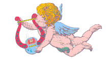

Para mi
amiga MariPaz Castiñeira Molpeceres recordándola cada 28 de Diciembre. Porque ella es
coqueta y playera a la vez que sencilla y
vaporosa.
Para mi
amiga MariPaz Castiñeira Molpeceres recordándola cada 28 de Diciembre. Porque ella es
coqueta y playera a la vez que sencilla y
vaporosa.

 Érase
una vez, un ermitaño que fue invitado a visitar la corte del
rey más poderoso de un lejano país de cuyo nombre no puedo acordarme.
Érase
una vez, un ermitaño que fue invitado a visitar la corte del
rey más poderoso de un lejano país de cuyo nombre no puedo acordarme.
-Envidio a un hombre santo como tu, que se contenta con tan poco, le dijo el soberano.
-Yo envidio a vuestra majestad, que se contenta con menos que yo, respondió el ermitaño.
-¿Cómo puedes decirme eso, cuando todo el país me pertenece? dijo el rey ofendido.
-Justamente por eso, rey mío. Yo tengo la música de las esferas celestes. Tengo los ríos y las montañas del mundo entero. Tengo la luna y el sol, porque tengo a Dios en mi alma y vuestra majestad solo posee este reino.